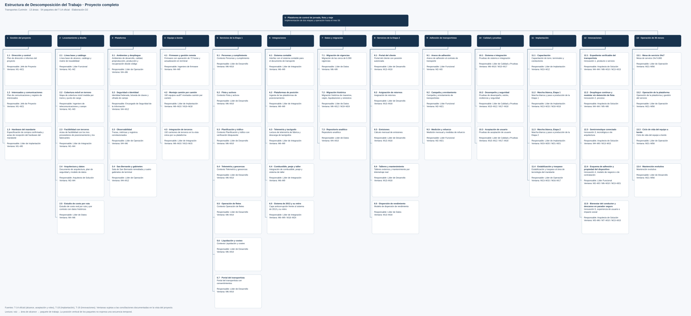

<!doctype html><html lang="es"><meta charset="utf-8"><title>EDT completa · Transportes Curimón</title><style>body{margin:0;background:#f6f8fb;font:16px Arial;color:#17324d}header{padding:20px 30px;background:#17324d;color:white;position:sticky;top:0;z-index:2}button,a{margin-right:12px;padding:9px 14px;border:0;border-radius:6px;cursor:pointer}a{color:white}main{overflow:auto;height:calc(100vh - 120px)}img{display:block;max-width:none}</style><header><b>EDT del proyecto completo · 54 paquetes en un único árbol</b><p><button onclick="document.querySelector('img').style.width='100%'">Ajustar al ancho</button><button onclick="document.querySelector('img').style.width='4940px'">Tamaño legible · desplazar</button><a href="EDT_Proyecto_Completo.svg">Abrir SVG</a><a href="EDT_D2.drawio">Editable diagrams.net</a></p></header><main></main></html>